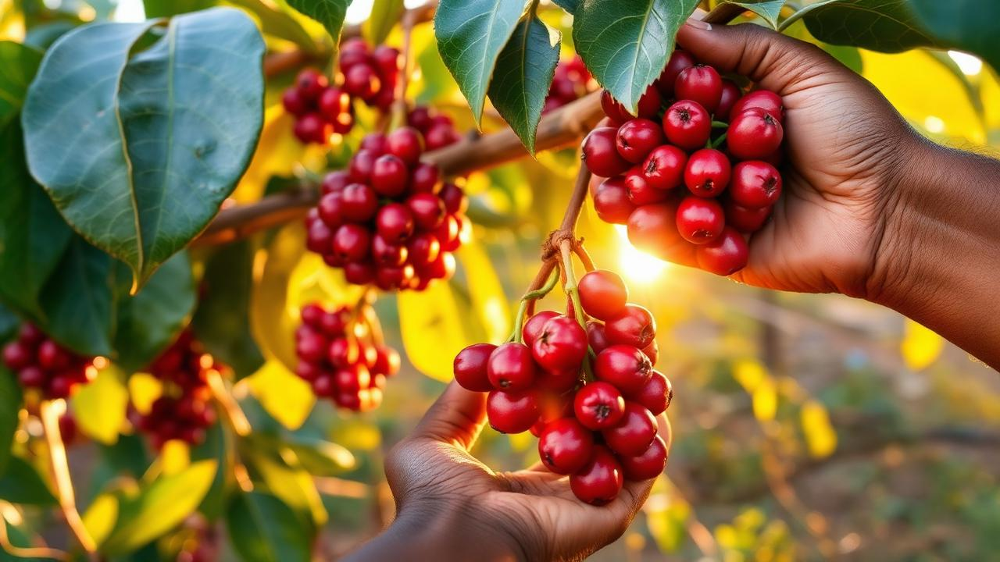

Coffee export earnings hit USD 1.4 billion — highest on record

The Uganda Coffee Development Authority confirms a 38% year-on-year increase in export earnings, the highest on record, as new processing facilities opened in Mbale and Mbarara.
Government policy continues to emphasise value addition at home — from washing stations to soluble coffee — so that more of the price paid in consuming markets stays with Ugandan farmers and processors.
The season’s performance is being read as evidence that organised production, quality control and market access can move a staple crop from subsistence to a pillar of the export ledger.